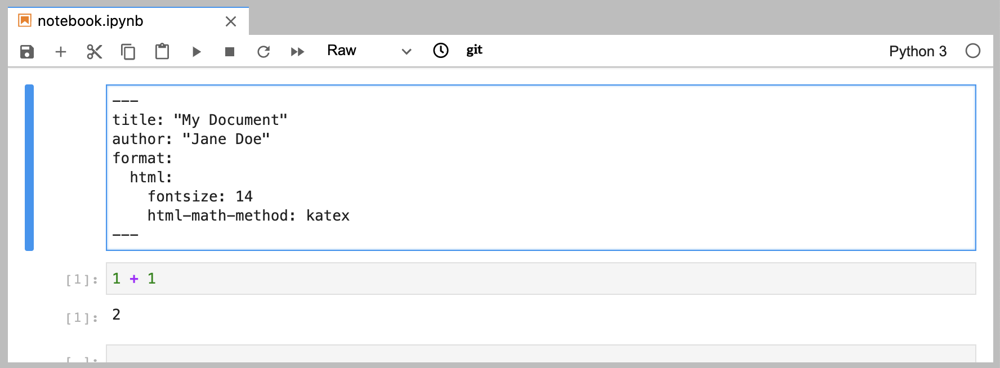

Exporting Notebooks
Overview
If you have an existing Jupyter Notebook (.ipynb file) that you want to export to one of the formats supported by Pandoc, you can do this using quarto render. For example:
$ quarto render notebook.ipynb # html by default
$ quarto render notebook.ipynb --to pdf
$ quarto render notebook.ipynb --to docxBy default, Quarto will not re-execute the code cells in the notebook. If you want to execute code cells during render, specify the --execute flag. For example:
$ quarto render notebook.ipynb --executeExport Options
There are dozens of options that you can use to customize exported output. You can specify these options by adding a raw YAML block at the top of your notebook:

Alternatively, you can keep these options in a separate YAML file and reference this file using the --metadata-file command line argument. For example:
$ quarto render notebook.ipynb --metadata-file options.ymlSee the Basic Usage article to learn more about the various metadata options that can be used to customize output.